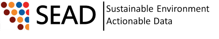

Your web browser must have JavaScript enabled in order for this application to display correctly.

Powered by
NCSA/CET Medici
: (@VERSION@) |
Medici Desktop Application
|
Report a problem
|
Request a feature